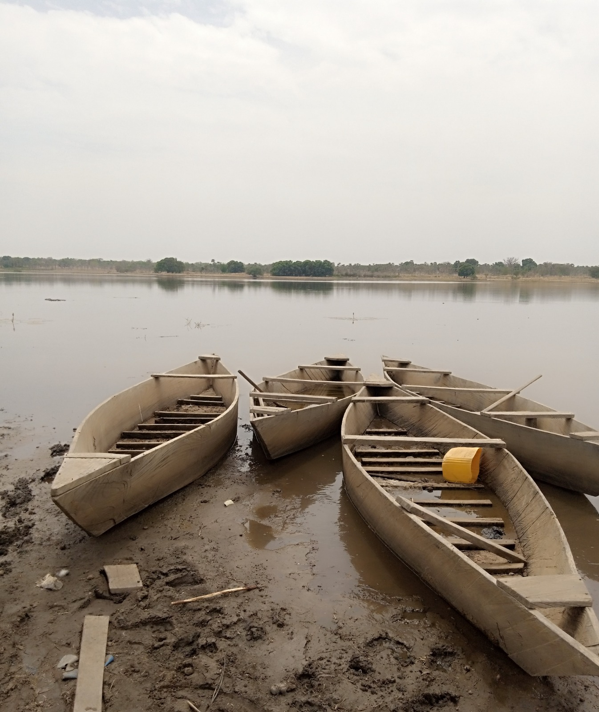
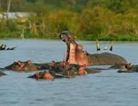
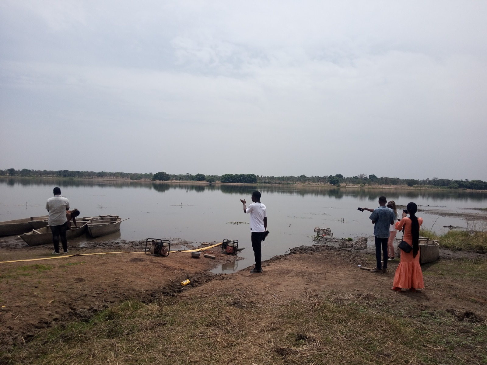

Bienvenue sur la page: Lac de Tringrela

Le Lac de Tengréla est un lac sacré à 35 km de Banfora. Il est célèbre pour ses crocodiles qui cohabitent avec les hommes. Contrairement aux autres lacs, ici les crocodiles sont apprivoisés. La légende dit qu’ils sont les gardiens et protecteurs du village. Ils ne s’attaquent jamais aux pêcheurs ni aux habitants. On peut même les toucher et les nourrir sous surveillance. Le lac s’étend sur plusieurs hectares, entouré de roseaux. Des pirogues traditionnelles glissent sur l’eau calme. L’atmosphère est paisible, presque spirituelle. Tengréla est un exemple rare d’harmonie homme-animal.

L’histoire raconte qu’un chasseur a épargné un crocodile femelle. En remerciement, les crocodiles ont promis de protéger le village. Depuis, aucune attaque mortelle n’a été recensée ici. Les anciens disent que les crocodiles reconnaissent les Tengréla. Ils viennent quand on les appelle et mangent dans la main. Cette alliance dure depuis plus de 8 siècles selon l’oral. Le lac est donc un site culturel autant que naturel. Les touristes viennent tester la légende par eux-mêmes. Les guides locaux expliquent les règles de respect à suivre. Tengréla prouve que la cohabitation est possible.

La visite du lac se fait toujours avec un guide du village. Il siffle ou claque des mains pour appeler les crocodiles. Ils sortent de l’eau et viennent lentement vers la berge. Le guide nourrit les plus vieux avec du poulet ou du poisson. Tu peux t’approcher et poser la main sur leur dos rugueux. Leur peau est froide, épaisse et couverte de plaques. Les yeux jaunes te fixent sans agressivité. C’est une sensation entre peur et fascination totale. Les enfants du village jouent près d’eux sans crainte. Suis toujours les consignes du guide pour ta sécurité.

Le lac abrite une biodiversité aquatique très riche. Des oiseaux pêcheurs, hérons, aigrettes et marabouts le survolent. Des tortues d’eau douce se reposent sur les troncs flottants. Les roseaux abritent des grenouilles et des libellules géantes. Les pêcheurs y attrapent tilapias et silures chaque jour. L’eau du lac est utilisée pour l’agriculture maraîchère. Des jardins de tomates et d’oignons bordent les rives. Le lac régule le climat du village de Tengréla. Il reste une réserve d’eau même en pleine saison sèche. C’est le poumon bleu de toute la zone.

Pour tes photos, Tengréla joue sur le contraste. Capture le reflet des crocodiles dans l’eau calme du matin. Photographie la main d’un enfant qui touche un crocodile. La pirogue traditionnelle donne une touche authentique. Le coucher de soleil transforme le lac en miroir doré. Utilise un téléobjectif pour les portraits de crocodiles. Le grand-angle montre bien l’étendue du lac et les roseaux. Les pêcheurs en action font de belles scènes de vie. Chaque image raconte cette paix improbable. Tengréla, c’est la force tranquille de la nature.

C'est Magique!!